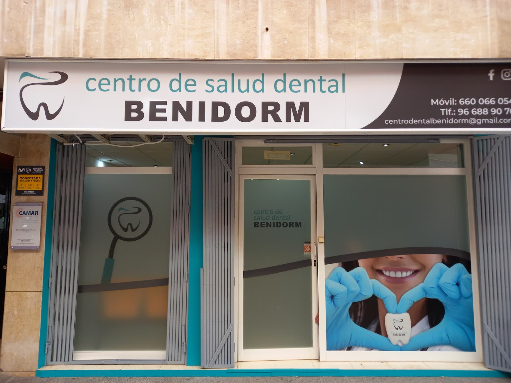

“Ir al dentista siempre me daba un poco de respeto pero salí muy tranquila. Desde que entras por la puerta, Natalia te recibe siempre con una sonrisa y un trato súper amable. Tito, que está con la doctora, es muy atento y siempre está pendiente de que estés cómoda y relajada durante todo el proceso. Y la doctora Alba es muy paciente y explica cada paso que va realizando, lo que da mucha tranquilidad. Sin duda, un equipo de 10.”
Dentista en el centro de Benidorm
El dentista para los que no quieren ir al dentista.
Implantes, coronas, blanqueamiento y estética dental, para adultos y niños. Y una consulta donde te explican cada paso antes de darlo. Lo dicen sus pacientes, 132 veces, en Google.
4,9 en Google · 132 reseñas
Una clínica de barrio en el pasaje de Santa Rita de Casia, en pleno centro de Benidorm. Abierta hasta las siete de lunes a jueves, para venir al salir del trabajo.
La clínica
Si te da respeto, aquí lo saben.
Lo que más repiten sus pacientes en Google no es un tratamiento: es que entraron con miedo y salieron tranquilos. Que la doctora explica cada paso mientras lo hace, y que el trato, desde recepción hasta la consulta, es amable y cercano.
Sus pacientes nombran a la doctora Alba, a Tito y a Natalia. Una escribe que, para quien tiene pánico al dentista, contar con un centro así es un privilegio.
Pedir una primera visitaLo que más se repite en sus reseñasGoogle
1
Entrar con miedo y salir tranquilo“Ir al dentista siempre me daba un poco de respeto, pero salí muy tranquila.”
2
Te explican cada paso“La doctora Alba es muy paciente y explica cada paso que va realizando.”
3
Trato cercano desde la puerta“Natalia te recibe siempre con una sonrisa y un trato súper amable.”
4
Si hay hueco, te atienden“Fui sin cita previa durante mis vacaciones y me atendieron de inmediato.”
Frases literales de reseñas públicas en Google. Se recomienda pedir cita.
Horario
Hasta las siete, de lunes a jueves.
Jornada seguida de diez a siete, de lunes a jueves, y de diez a dos los viernes. Se puede venir al salir de trabajar sin pedir el día.
Escribe por WhatsApp con lo que te pasa y te dicen cuándo pueden verte.
Pedir citaLa semanaPasaje de Santa Rita de Casia
L
M
X
J
V
S
D
10:0014:3019:00
Horario de la ficha de Google. Se recomienda pedir cita.
Tratamientos
De la revisión al implante.
Pulsa el que te interese y escríbenos.
Primera visita y revisión
Se mira, se explica y se propone qué hacer.
Implantes dentales
Para recuperar piezas que faltan.
Coronas de zirconio sin metal
Fundas del color del diente.
Blanqueamiento dental
Para recuperar el blanco del diente.
Estética dental
La sonrisa que se ve.
Niños
Primeras visitas y revisiones sin prisa.
Lo que dicen sus pacientes
4,9 en Google, con 132 reseñas.
Estas son tres, tal cual las escribieron.
“Estoy muy contenta con el trato recibido. El equipo es muy amable y explican todo con claridad. Sin duda, volveré”
“El personal es muy amable. Fui a la consulta sin cita previa durante mis vacaciones y me atendieron de inmediato. Muy recomendable.”
Horario y contacto
Pasaje de Santa Rita de Casia, Benidorm.
Horario
| Lunes | 10:00–19:00 |
| Martes | 10:00–19:00 |
| Miércoles | 10:00–19:00 |
| Jueves | 10:00–19:00 |
| Viernes | 10:00–14:00 |
| Sábado | Cerrado |
| Domingo | Cerrado |
Contacto
- Pasaje de Santa Rita de Casia
03501 Benidorm (Alicante) - 660 06 60 54
- Pedir cita por WhatsApp
- Lunes a jueves, 10:00–19:00; viernes, 10:00–14:00. Se recomienda pedir cita.
El mapa es de Google y usa sus cookies. Se carga solo si lo pides.
Primera visita
Cuéntanos qué te pasa, sin que te dé respeto.
Escribe por WhatsApp con lo que notas, o llama en horario de consulta, y te dicen cuándo pueden verte.